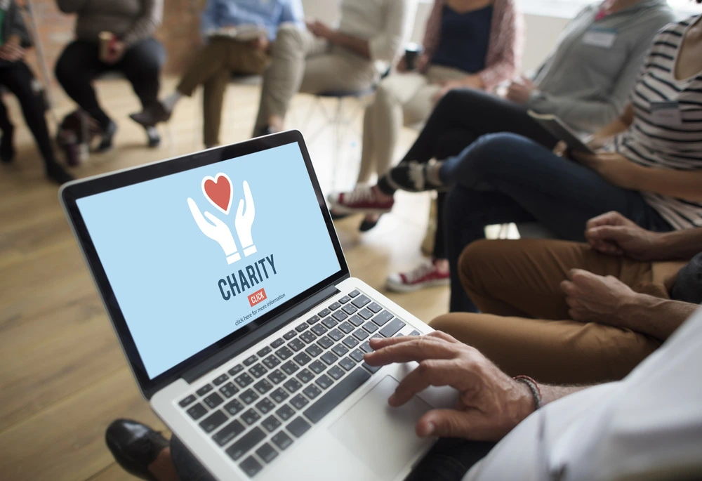

Why should you donate?
Have you already done it or are you thinking of doing it?
Yes, donating money may seem like helping too little, that more should be done; traveling to the
country, working hand
in hand with the communities and getting to know all the ins and outs of humanitarian cooperation.
Most people believe that an act of solidarity is not quantified in money but in time and, in truth,
they are right,
the world would be much better off if it were. However, nowadays very few people have the
possibility to leave everything and
go to other countries to help and work to change the situation in which many people live.
But what about the rest of us, what can we do? That is where fundraising organizations come in,
people who are dedicated
exclusively to manage, administer and work so that other people can be cared for at any time and
place.
All social projects need resources to be implemented.
Ideally, each initiative should have funds allocated to it from its early stages
or even before it is launched, and these funds should help to meet the objectives set by those in
charge.
However, this is not always possible.
Sometimes, the needs of the project exceed the costs initially estimated and a new injection of resources is indispensable. In other cases, especially when humanitarian emergencies arise, the needs are those that require new efforts in this regard. In addition, if you have a company, now you can also help refugees with a solidarity gift for your employees, a very different and rewarding gift at the same time. Donations are a fundamental element in many projects, especially if the resources allocated to them or institutional contributions do not cover the needs that have driven them.
A donation is a contribution, generally private, that seeks to give a boost to initiatives of any
kind.
Those who make the donation understand the importance of the work being done and therefore decide to
donate money.
Among the most significant reasons for this type of action, the following two stand out
- Social commitment. Thousands of people make the decision to donate money to reinforce their social commitment. They recognize the existence of a problem or a lack in their environment that needs to be solved and they mobilize and act to achieve it.
- Personal satisfaction. Feeling good about oneself is another of the most common reasons for donating money. Or rather, the fact of knowing that in some way we are helping to solve problems in the environment in which we live and mitigate their adverse effects.